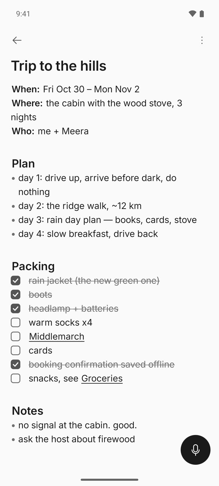
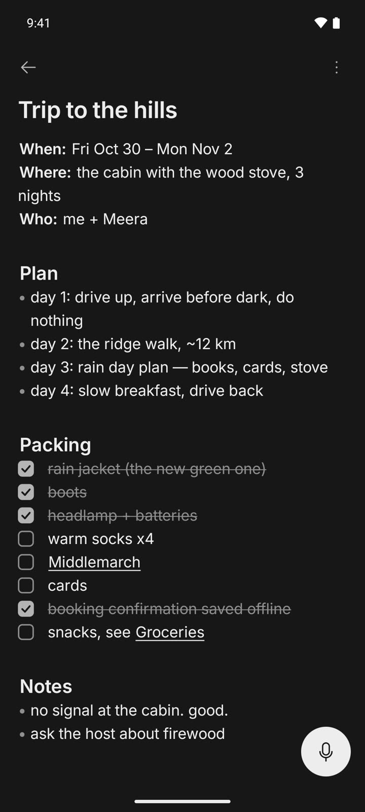
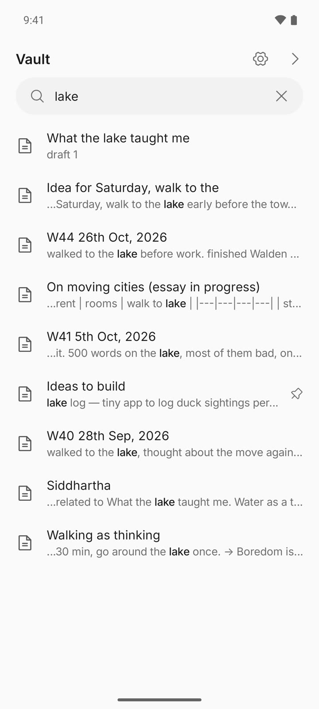
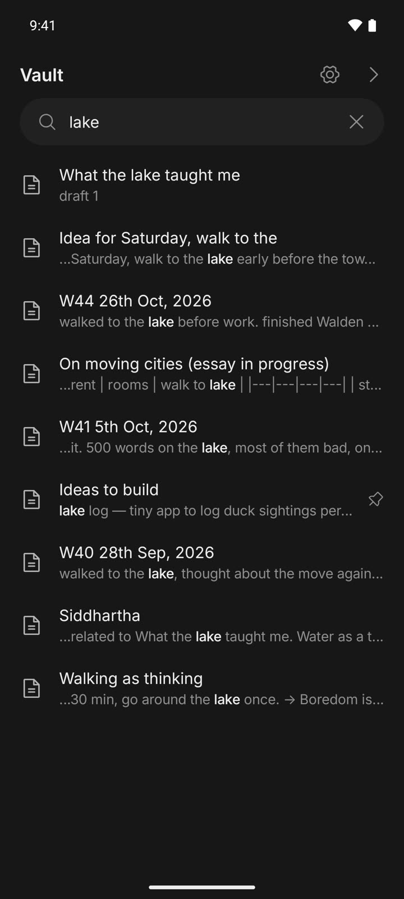
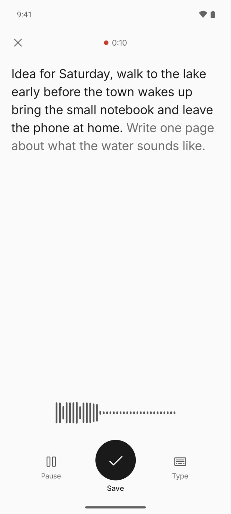
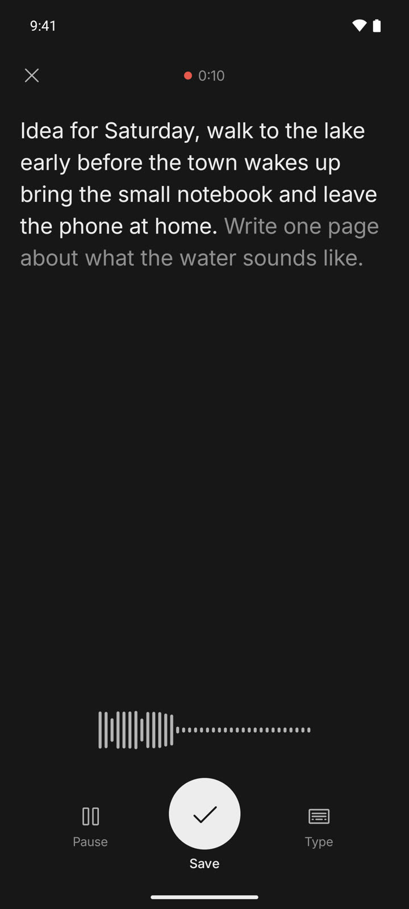
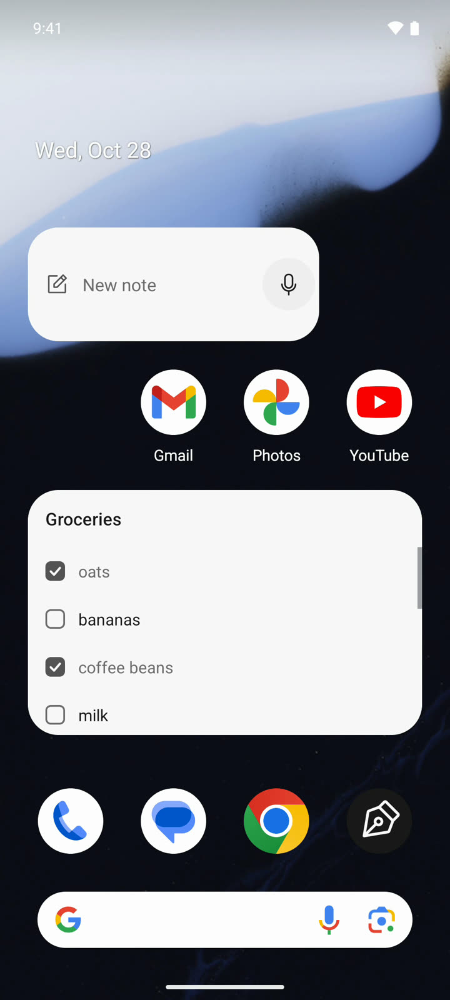
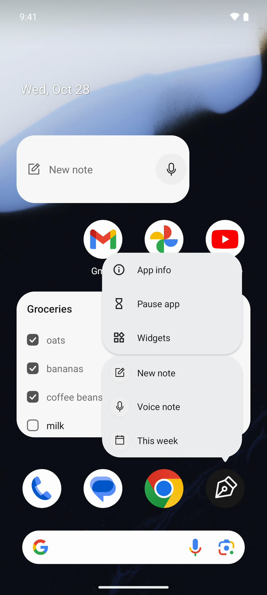
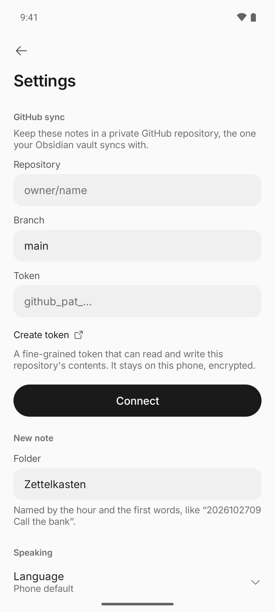
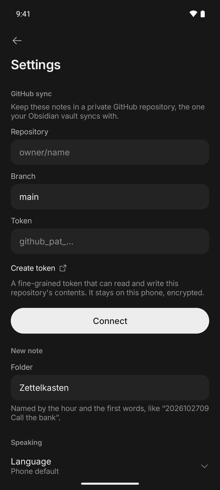

For Android · Open source
A calm place
to write.
Notes is a small Android app for your Obsidian vault. It opens to the notes you pinned, writes plain Markdown, and syncs through your own private GitHub repository, with no server in between.
One minute, recorded in the app on an Android emulator with made-up notes.
Pairs with
GitHub Vault Sync The Obsidian plugin this app syncs with. Notes runs its sync engine, unchanged, so your phone and your computer share one private repository.Obsidian, without the busy part.
Obsidian's phone app does a lot. This one does less: open it, write, put the phone down. Every note stays a plain Markdown file in the same vault, so Obsidian on your computer sees every word.


Home
Your pins, then the page.
Home is a short list of the notes and folders you pinned, and a bar for a new note. Nothing else competes for your eye.
- The This week pin opens this week's note at the end, where you stopped writing. If the note doesn't exist yet, it starts from your weekly template.
- The vault sits on one side of Home and your recent notes on the other.
- Recents lists notes under date headings, with the time you last touched each one.


Editor
Markdown, minus the markup.
The editor is the whole screen. Headings, bold, links and lists look finished, and the symbols behind them show only on the line you're editing.
- Tasks tick with a tap. Long tasks and bullets wrap with a hanging indent.
- Type [[ to get link suggestions. Tap a link to open that note.
- Undo and redo, and a mic that floats over the page.
- Images in a note load from GitHub when you reach them, so they don't fill the phone.


Vault
The whole vault, one tree.
Every folder and note on one page. Folders open in place, so you never lose where you are.
- Search floats at the top and shows the words around each match.
- Long-press to make a note or folder, rename, pin to Home, or delete.
- Deleted the wrong one? Undo brings it back.


Voice
Speak, and watch it write.
Tap the mic and the screen becomes a page that fills in as you talk. Recognition runs on the phone and keeps going through pauses.
- Pause, keep talking, or switch to typing. Save when you're done.
- Until you save, the note waits as a draft outside your vault.
- Optional: add an OpenAI key and the recording gets a second, more accurate transcript after you save. It replaces the words you haven't edited, and the recording is deleted after.


Quick ways in
A note is one tap away.
Most notes start when you're doing something else. These get you to the page without opening the app first.
- Home screen widgets: a New note bar with a mic, and a pinned note whose tasks tick in place.
- Press and hold the app icon for New note, Voice note or This week.
- A Voice note tile in Quick Settings.
- Share text or a link from any app into a new note, or to the end of one you pick.


Sync
No server. Just your repo.
Notes syncs with the private GitHub repository your vault already uses, with the same sync code as the GitHub Vault Sync plugin for Obsidian. Your edits become commits, sent straight to the GitHub API. There is no server of its own.
- Edits are saved on the phone first and sent after you leave the app, so writing never waits on the network.
- If the phone and GitHub both changed a note, both versions are kept in the note, between conflict markers, for you to settle.
- The token stays on the phone, encrypted. Sync stays quiet unless something needs you.